NORTE ARGENTINO
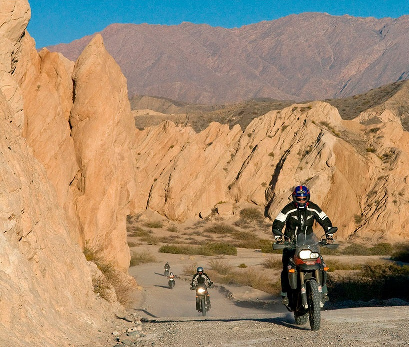
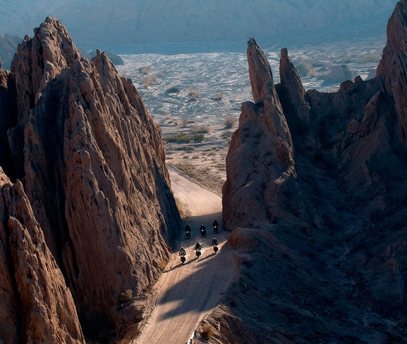
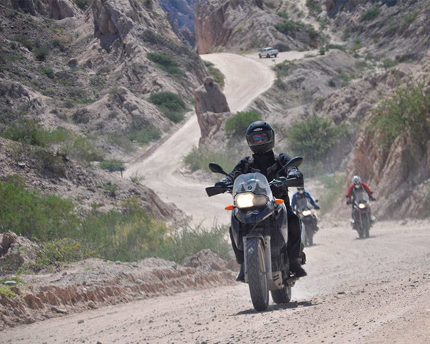
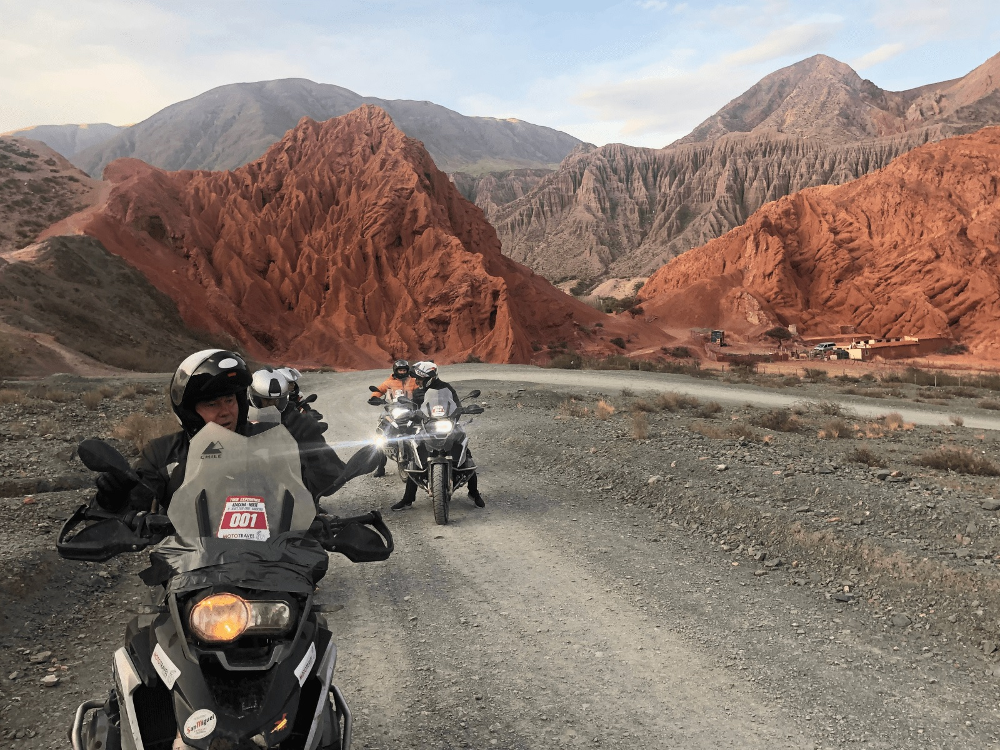
Abra del Acay: El punto carretero más alto del norte argentino, con una altura de 4895 metros sobre el nivel del mar.
Salinas Grandes: Un lugar blanco y deslumbrante.
Cerro de los Siete Colores: Un lugar en Purmamarca y Tilcara.
Laguna de los Pozuelos: Un lugar con una flora y fauna peculiar, a casi 4000 metros sobre el nivel del mar.
Quebrada de Humahuaca: Contraste de colores y paisajes únicos en la puna jujeña.
Ruinas de Pukará de Tilcara: Una de las maravillas imperdibles de Argentina.
Cuesta de Lipán: Un paso de 4200 metros sobre el nivel del mar.
RUTA 40
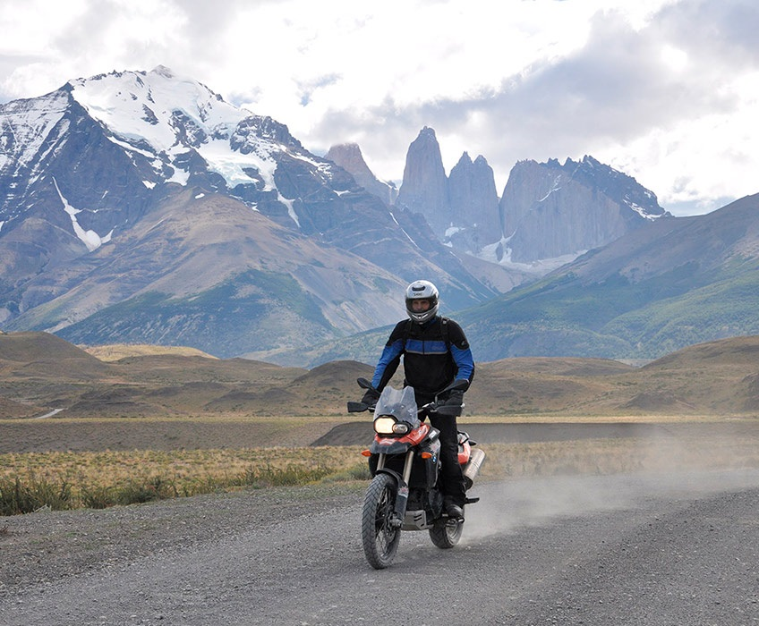
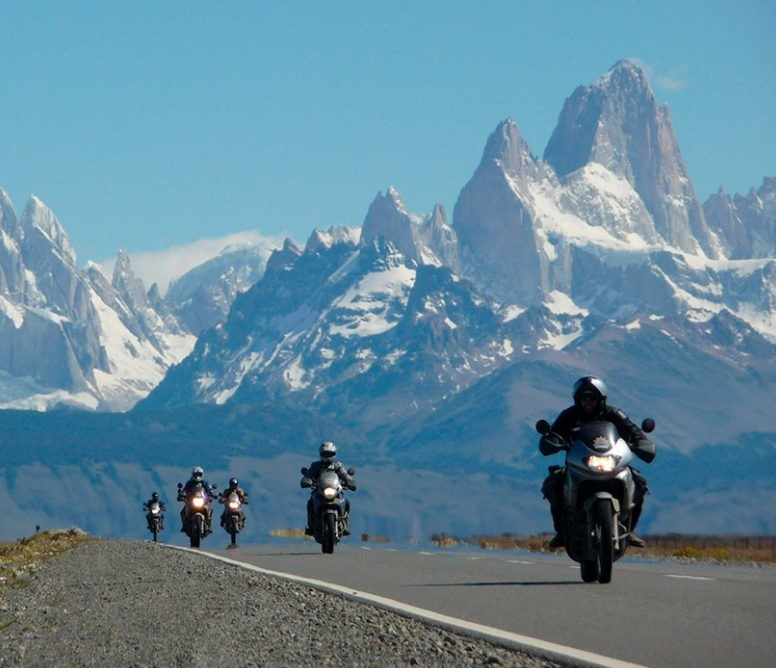
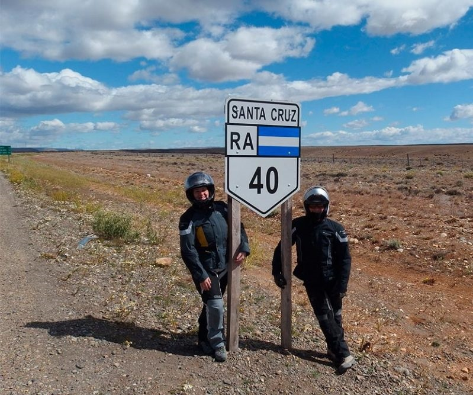
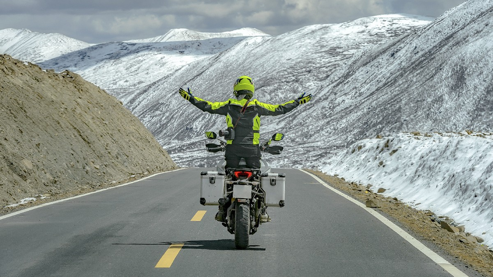
La región cuyana: Bordeando la cordillera, lugar único con viñedos y gastronmía de excelencia.
La Payunia: Región volcánica que te hará sentir rodar en otro planeta.
Las ciudades de San Juan y Mendoza: Descansar un poco de la ruta y adentrarse en estas icónicas ciudades.
Los oasis de Jáchal y Huaco: Con cuestas y rios en donde el verde vuelve a ser protagonista.
La Rioja: Tierras rojizas, quebradas y pueblitos pintorescos.
PATAGONIA

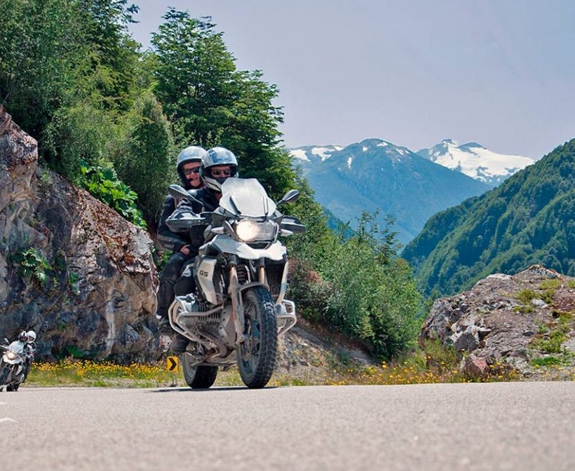
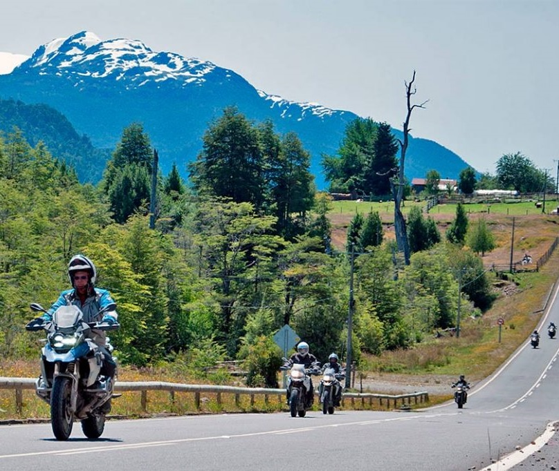
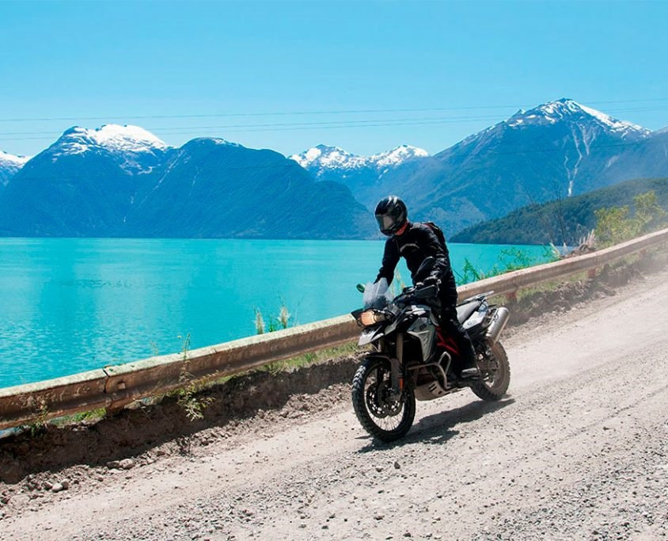
San Martin de Los Andes: Lago Lacar, camino de los siete lagos.
Bariloche: Todos los atractivos de la principal ciudad turística de la Patagonia argentina.
El Bolsón: Centro de senderismo, ascenso al glaciar. Cervecerías artesanales.
Esquel: Entrada al Parque Nacional Los Alerces. Viaje en tren turistico "La Trochita".
Trevelin: Ciudad de ensueño forjada por inmigrantes galeses. En octubre los tulipanes dan el marco de postal característico.
MEDITERRANEO ARGENTINO
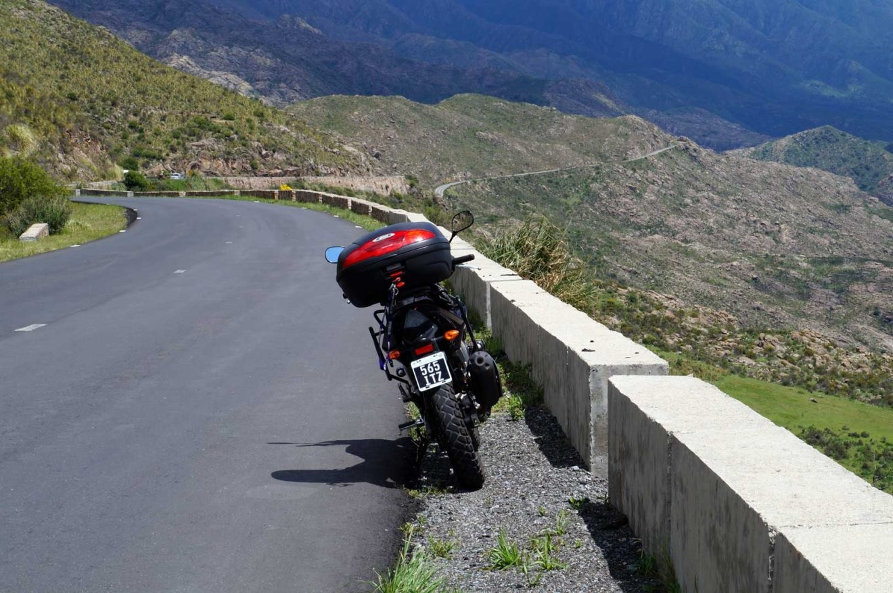
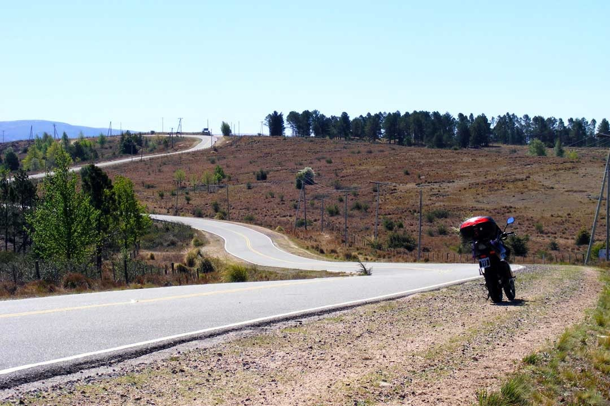
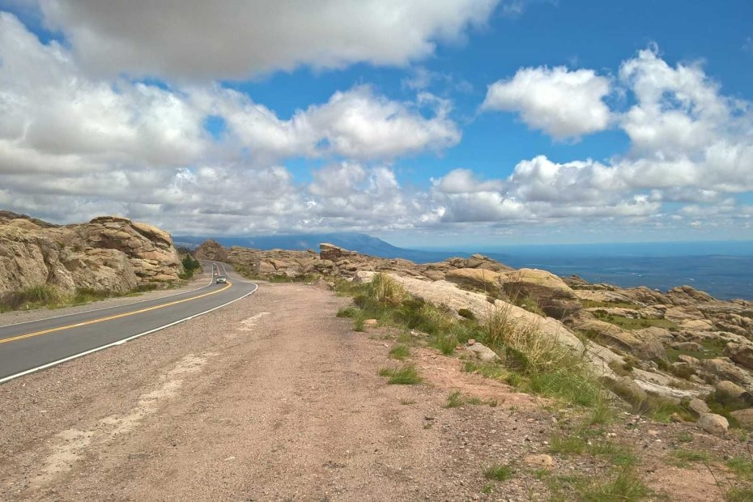
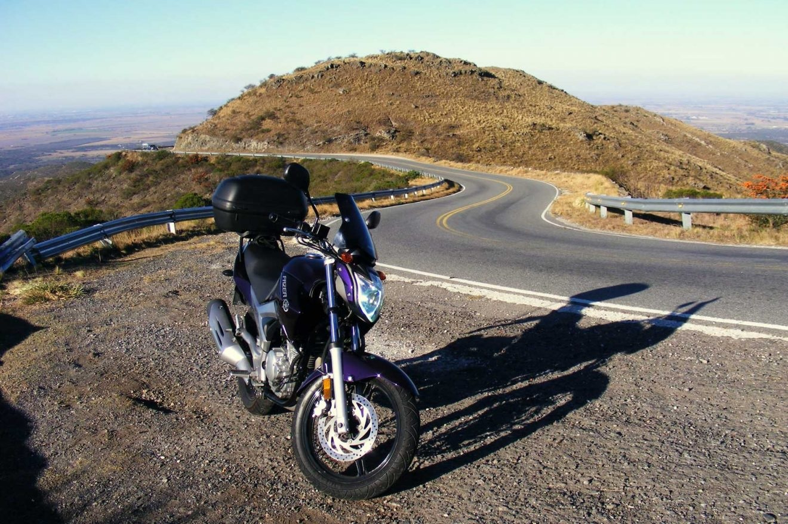
Camino de la Costa: En traslasierra, la ruta que bordea los cerros se introduce en pueblitos donde destacan por su paisaje y servicios.
Merlo: Ciudad icónica para el turismo en San Luis.
La Carolina: Elegida como el pueblo mas hermoso del mundo. Esta ciudad minera posee una belleza particular al igual que el camino que debemos recorrer para alcanzarla.
Villa General Belgrano: Con su impronta alemana, este pueblo cordobés posee todos los atractivos. El Oktoberfest es la festividad en donde destaca a nivel nacional.
Lagos, arroyos y embalses: Al estar enclavada entre cerros, esta región está atravesada por valles, rios, arroyos y en donde el desarrollo ha conformado diques que generan paisajes únicos en un marco natural.